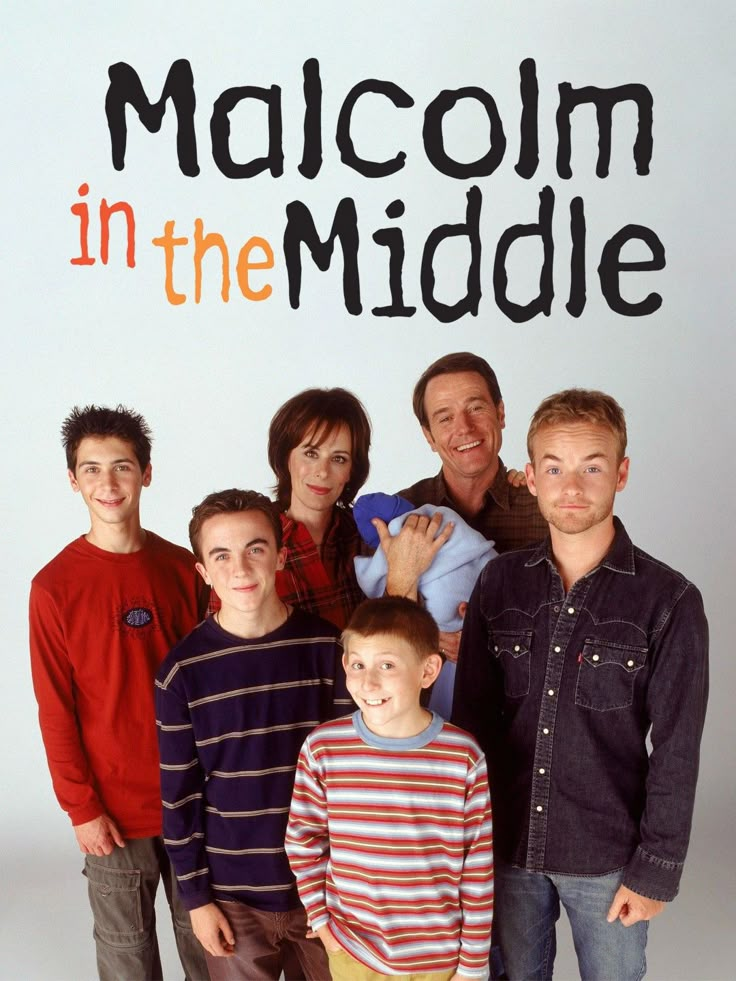
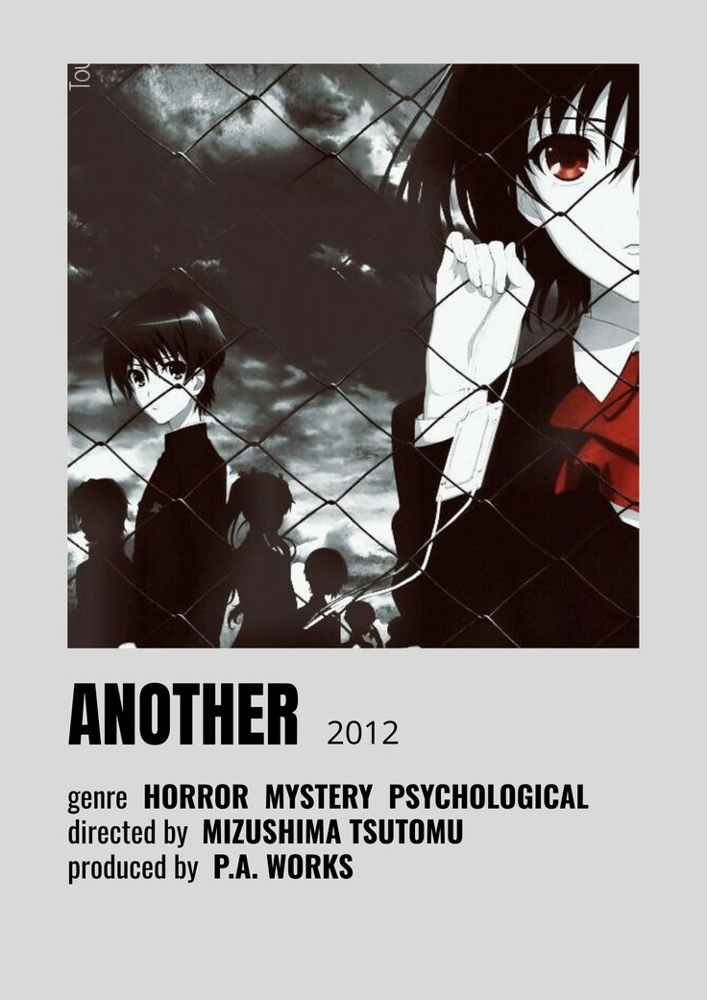
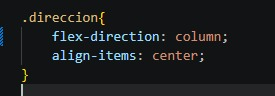

Ver series
Malcolm in the Middle

Me gusta porque es una serie divertida y relajante, ya la vi completa.
Jujutsu Kaisen
Es una de mis series favoritas por la acción y el suspenso, es muy entretenido y me gustan sus personajes, mi personaje favorito es Nobara.
Another

Me gusta porque tiene una historia de terror interesante, fue de los primeros animes que vi.
Código CSS utilizado
Aquí se utilizó flex-direction: column, acomoda los elementos en columna, uno debajo del otro.
